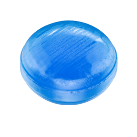
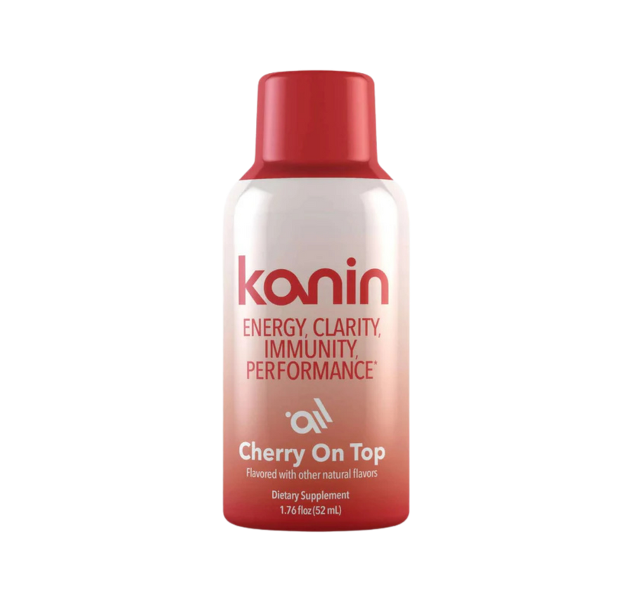
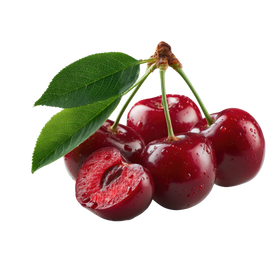

PICK YOUR
FAVORITE FLAVOR
Peak performance, bottled. Kanin fuels steady energy, sharper focus, and real endurance — no crash, no compromise.
Cherry On Top flavored Kanin Shot
Napa Blast flavored Kanin Shot
Candy Store flavored Kanin Shot


View Product
Cherry On Top
Shop
View Product
Napa Blast
Shop
View Product
Candy Store
Shop